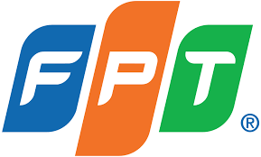
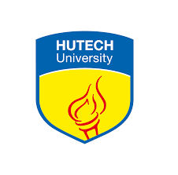
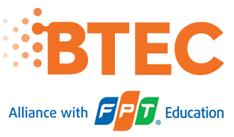

FPT

Đại học FPT được thành lập ngày 8/9/2006 theo Quyết định số 208/2006/QĐ-TTg của Thủ tướng Chính phủ và hoạt động theo Quy chế tổ chức và hoạt động của Trường Đại học tư thục theo Quyết định số 61/2009/QĐ-TTg ban hành ngày 17/4/2009 của Chính phủ.
Sứ mệnh của Đại học FPT là đào tạo nguồn nhân lực chất lượng cao trong giai đoạn hội nhập, cung cấp năng lực cạnh tranh toàn cầu cho người học, góp phần mở mang bờ cõi trí tuệ đất nước. Khác biệt trong phương pháp đào tạo của Đại học FPT là gắn kết chặt chẽ với các doanh nghiệp, đào tạo theo chương trình chuẩn công nghệ quốc tế, thành thạo hai ngoại ngữ, rèn luyện kỹ năng mềm, chú trọng phát triển con người toàn diện, hài hòa. ...
Đại học công nghệ HUTECH

Trường Đại học Công nghệ TP.HCM - HUTECH tiền thân là Trường Đại học Kỹ thuật Công nghệ TP.HCM, được thành lập ngày 26/4/1995 theo quyết định số 235/QĐ-TTg của Thủ tướng Chính phủ và đi vào hoạt động theo quyết định của Bộ trưởng Bộ GD&ĐT số 2128/QĐ-GDĐT.
Sau 25 năm xây dựng và phát triển, hiện HUTECH sở hữu 05 khu học xá toạ lạc tại TP. Hồ Chí Minh. Các khu học xá được đầu tư xây dựng khang trang, hiện đại theo chuẩn quốc tế với tổng diện tích trên 100.000m2 tạo không gian học tập hiện đại, năng động, thoải mái..
Cao đẳng anh quốc BTEC FPT

Cao đẳng Anh Quốc BTEC FPT được thành lập trên cơ sở liên kết giữa Tổ chức giáo dục FPT Education và Tổ chức giáo dục và khảo thí Pearson – Vương Quốc Anh, được công nhận là trường đào tạo chính thức chương trình BTEC HND tại Việt Nam..
Đại Học Công Nghiệp

Tiền thân của Trường Đại học Công nghiệp thành phố Hồ Chí Minh là Trường Huấn nghiệp Gò Vấp do các tu sĩ dòng Don Bosco thành lập 11/11/1956 tại xã Hạnh Thông, Quận Gò Vấp, Tỉnh Gia Định. Năm 1968, Trường được đổi tên thành Trường tư thục Trung học Kỹ thuật đệ nhất cấp Don Bosco. .
Đại Học RMIT
RMIT Việt Nam mang đến cho bạn cơ hội theo học các ngành học lý thuyết kết hợp thực tiễn thuộc các lĩnh vực kinh doanh, công nghệ và sáng tạo.
Cho dù chọn ngành học nào, bạn đều được trải nghiệm tiêu chuẩn đại học quốc tế được thiết kế phù hợp với bối cảnh kinh tế và thị trường Việt Nam. Nhờ vậy, bạn sẽ học được những kỹ năng làm việc thực tế và tiếp cận nhiều hơn cơ hội làm việc trên phạm vi toàn cầu..